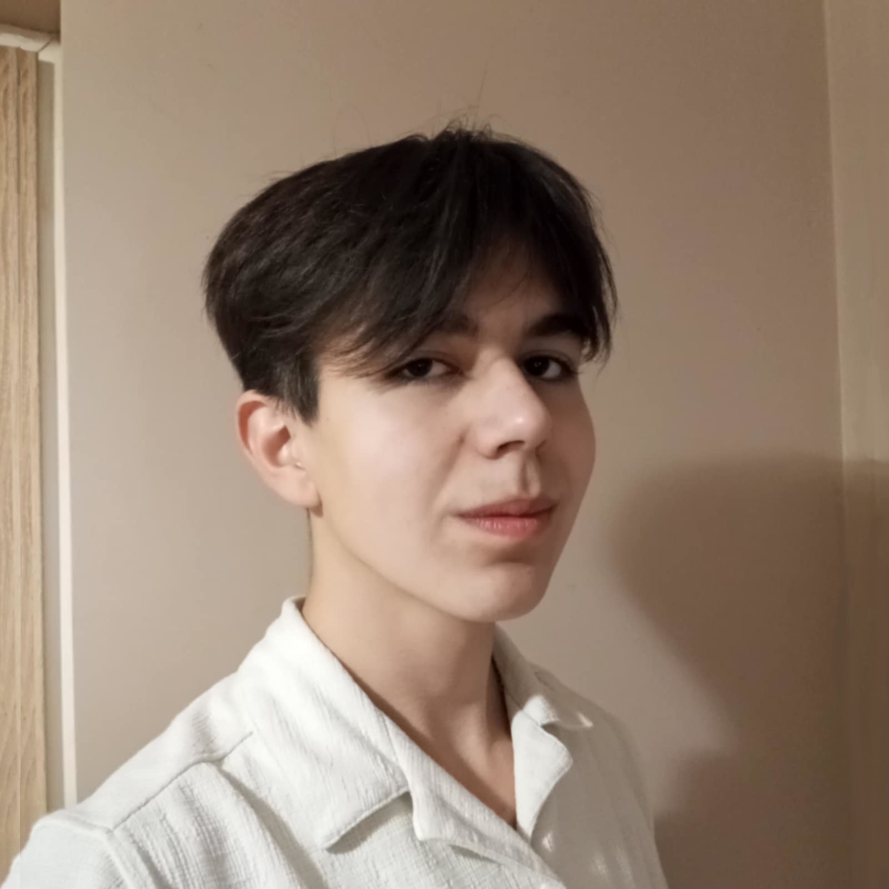
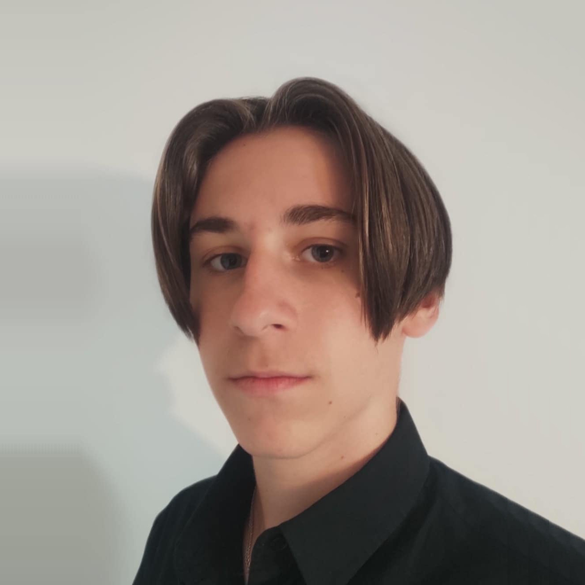

Konkurs CanSat to wyzwanie organizowane przez Europejska Agencję Kosmiczną dla młodzieży. Polega ono na zbudowaniu minisatelity - wielkości puszki po napoju - który będzie w stanie wykonać swoje misje. Musi mierzyć temperaturę i ciśnienie powietrza oraz przeprowadzić własną, wybraną misję. My postawiliśmy na podawanie współrzędnych dowolnego obiektu. Taka minisatelita mogłaby być użwywana na przykład w lokalizowaniu osób poszkodowanych lub zaginionych.
Ostatnie zmiany i osiągnięcia
- Określiliśmy misję
- Stworzyliśmy logo
- Napisaliśmy PDR
- Napisaliśmy stronę internetową
O zespole
Jesteśmy zespołem z I Liceum Ogólnokształcącego w Brzozowie. Cała nasza szóstka chodzi do drugiej klasy, a naszym opiekunem jest pani Joanna Chęć.
Joanna Chęć
Jestem nauczycielką matematyki i informatyki w I Liceum Ogólnokształcącym w Brzozowie. Interesuje mnie zdrowy styl życia, szczególnie pod względem zdrowego odżywiania. Z tego powodu w wolnym czasie zajmuję się prowadzeniem swojego ogródka z warzywami. Moją rolą w projekcie jest doradzanie członkom zespołu Projekt Ikarus w ich działaniach konkursowych. Sprawuję pozycję swojego rodzaju administratora i inspektora, który czuwa nad pracą swoich podopiecznych oraz stanowi łączność między nimi, a organizatorami konkursu.
Maciej Skarbek
Chodzę do klasy 2A, i mam 15 lat. Interesuje się programowaniem niskopoziomowym, Linux-em i grami karcianymi. Moją rolą jest pisanie oprogramowania, dzięki któremu nasz satelita zadziała oraz zajmowaniem się komunikacją radiową i stacją naziemną. Wziąłem udział w tym konkursie, bo interesuje mnie komunikacja radiowa oraz zawsze chciałem napisać kod na tego typu urządzenie.
Filip Matwijczyk
Mam 16 lat i chodzę do klasy 2A. Rozszerzam matematykę, informatykę oraz angielski na poziomie dwujęzycznym. Interesuję się sportami walki, fitnessem oraz montażem filmowym. Moją główną rolą w projekcie jest szeroko pojęta dokumentacja w postaci pisania raportów (PDR, CDR, FDR) oraz robienia zdjęć i filmów, które przedstawiają nasz postęp w pracy nad CanSatem. Biorę udział w tym projekcie, bo chcę aby był on dla mnie okazją dla rozwoju osobistego oraz swojego rodzaju wyzwaniem, które wyciągnie mnie spoza własnej strefy komfortu i wzbogaci o nowe doświadczenia oraz wspólne wspomnienia z innymi członkami drużyny.

Krzysztof Pisula
Mam 15 lat i uczęszczam do klasy 2A, gdzie realizuję rozszerzenia z matematyki, informatyki oraz angielskiego na poziomie dwujęzycznym. Interesuję się geopolityką oraz grami karcianymi. Od pewnego czasu pasjonuję się również animacją komputerową, jak i również prezentacją wizualną, dzięki której zdobyłem pewne umiejętności w obsłudze narzędzi takich jak Canva i PowerPoint. W ramach mojego udziału w projekcie skoncentruję się na szeroko pojętej grafice komputerowej oraz mediach społecznościowych. Chcę rozwijać swoją wiedzę w tych dziedzinach i cenię sobie możliwość współpracy z osobami o różnych umiejętnościach, od których mogę się wiele nauczyć.

Dawid Bocoń
Mam 16 lat, chodzę do klasy 2A. W szkole rozszerzam matematykę, informatykę i angielski w stopniu dwujęzycznym. Interesuje mnie motoryzacja, sposoby polepszania swojego życia oraz geopolityka i od pewnego czasu fascynuje się również perfumami. Moim głównym zadaniem w tym projekcie jest znalezienie odpowiednich komponentów, zaplanowaniem oraz rozmieszczeniem ich w CanSacie. Wziąłem udział, gdyż jest to dość nietypowy projekt, w którym wiedza teorytyczna nie znajduje się na pierwszym miejscu, lecz zastosowanie jej w praktyce oraz jestem przekonany moje zdolności praktyczne są w stanie zapewnić naszej drużynie zwycięstwo.

Mateusz Rzepka
Mam 15 lat i chodzę do klasy 1A. Rozszerzam matematykę, informatykę oraz język angielski na poziomie dwujęzycznym. Mam bardzo szeroki wachlarz zainteresowań lecz należy wspomnieć przede wszystkim o grze na gitarze, programowaniu, grach karcianych i matematyce. W projekcie zajmuję się głównie stroną internetową i sposobem przeprowadzenia misji dodatkowej. Wziąłem udział w tym projekcie ze względu na ciekawe problemy, którym trzeba stawić czoła, a które to wydają się być mi bliskie.
Tobiasz Pietrasz
Mam 16 lat, chodzę do klasy 2F. Rozszerzam matematykę, informatykę i fizykę. Interesuje się zbrojeniówką, astronomią, strzelnictwem i lotnictwem. W moim zakresie obowiązków jest zajmowanie się finansami, zdobywaniem sponsorów, oraz zajmowaniu się budową CanSata. Jestem w tym projekcie, bo lubię poznawać wartościowych ludzi i interesuje się tego typu urządzeniami.
O misji
Cansat - nasz minisatelita - będzie miał zamontowany termometr, wysokościomierz, kompas, moduł GPS oraz kamerę.
Misja dodatkowa to najtrudniejsze i najciekawsze zarazem zadanie.
Na początku będziemy musieli policzyć odległość w rzucie pionowym cansata od wybranego przez nas obiektu. Znając kąt widzenia obiektywu skorzystamy ze wzoru x = h tg α, gdzie α to połowia tego kąta, h - wysokość CanSata nad ziemią, a x - odległość od punktu pod CanSatem do krańca pola widzenia kamery. Następnym krokiem będzie przeskalowanie tej odległości do odległości między środkiem zdjęcia (czyli punktem bezpośrednio pod cansatem), a wybranym obiektem.
Następnie trzeba będzie przy pomocy kompasu ustalić, w którą stronę względem cansata oddalony jest wybrany przez nas obiekt. Na końcu sprawdzamy położenie cansata przy pomocy GPS i "przesuwamy" je o wyliczone wcześniej wartości.
Misję tą wykonać będzie można wielokrotnie dla różnych obiektów lub uśrednić kilka pomiarów jednego obiektu, aby uzyskać jak najlepszy wynik.
Plany
- Model 3D CanSata
- Oprogramowanie
- Budowa CanSata
 TikTok
TikTok
 Instagram
Instagram
 Facebook
Facebook